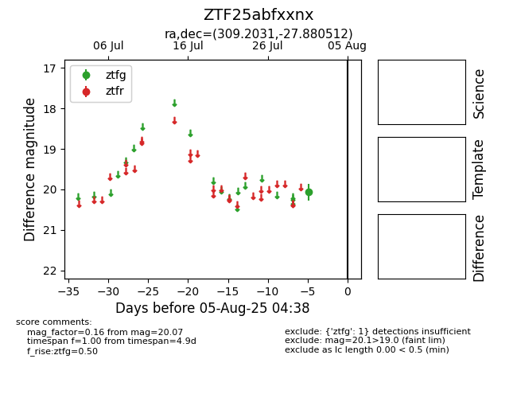

Target ZTF25abfxxnx at 2025-08-05 04:38, see:
FINK: fink-portal.org/ZTF25abfxxnx
Lasair: lasair-ztf.lsst.ac.uk/objects/ZTF25abfxxnx
ALeRCE: alerce.online/object/ZTF25abfxxnx
alt names
ZTF25abfxxnx (ztf,fink)
coordinates:
equatorial (ra, dec) = (309.2031,-27.88051)
galactic (l, b) = (16.2533,-34.21673)
photometry
last ztfg=20.07
1 ztfg detections
